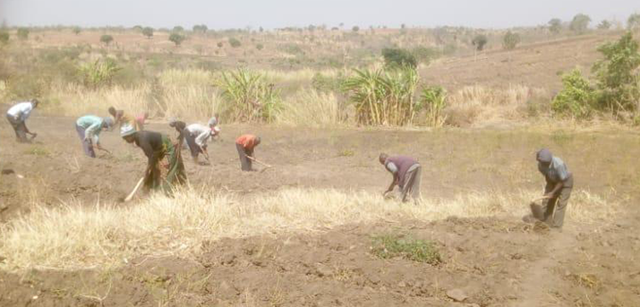
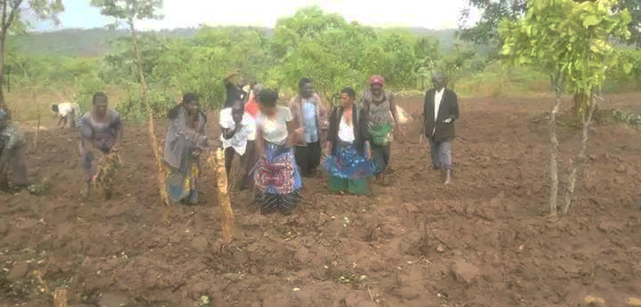
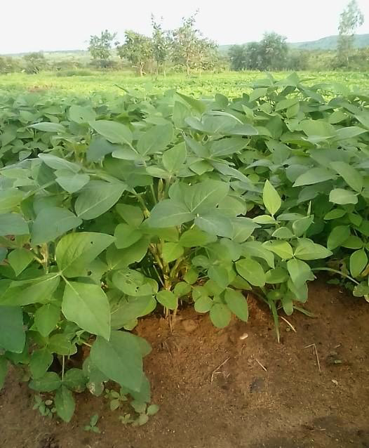
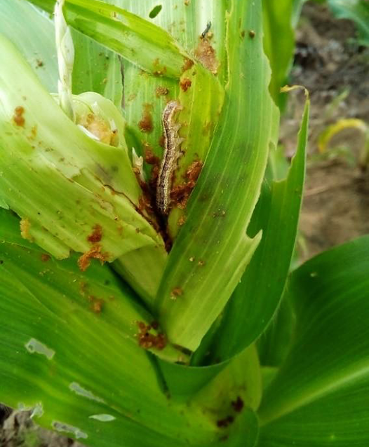
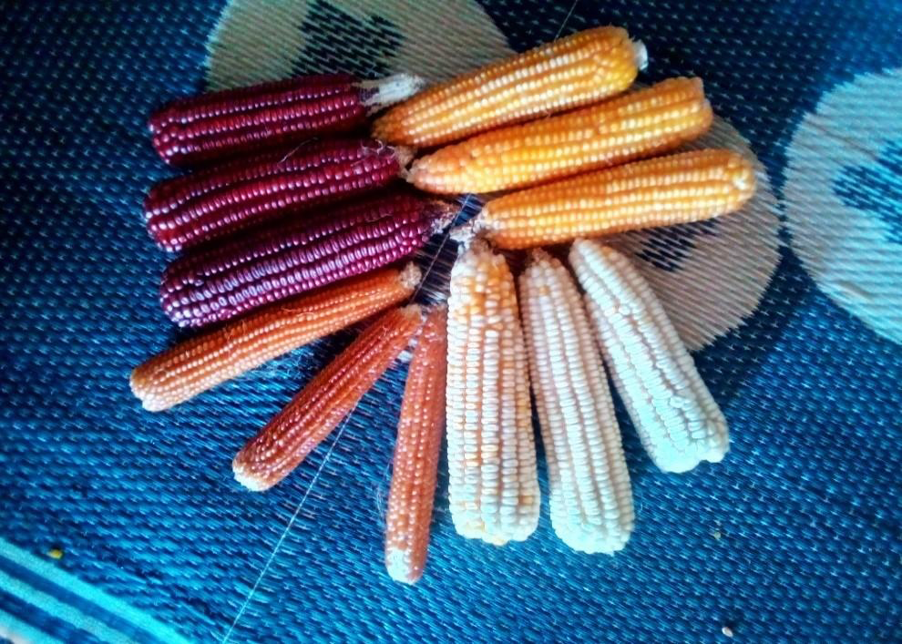
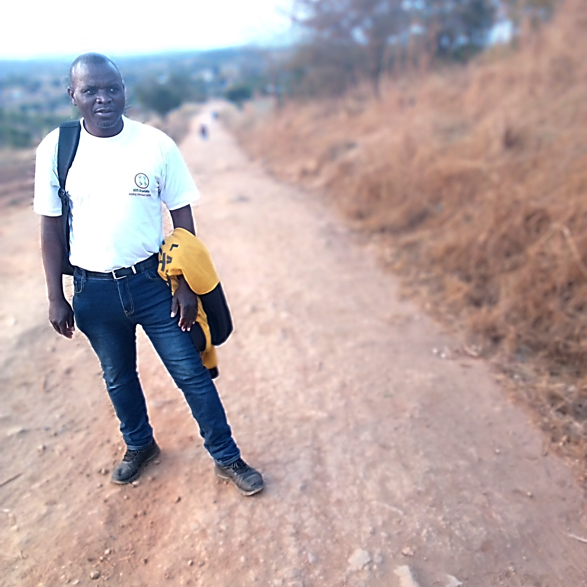

Our Work
KEYS Organization undertakes various initiatives, programs, and projects. The information below outlines the specific areas or causes which we focus on, such as cultural heritage, community development, environmental sustainability, entrepreneurship creation, advocacy for local needs, and knowledge systems relating to economic sustainability, agriculture, climate change, and health.
Notable Achievements
KEYS Organization, or Community-Based Organization, has achieved several projects that have positively impacted its members and the community. Through these projects, KEYS Organization has demonstrated its commitment to community development, capacity building, sustainable agriculture, and empowering its members.
Let’s break down each of these projects:
Registering of KEYS Organization
One of the foundational achievements of KEYS Organization was the successful registration of the organization. Registering as a community-based organization offers several advantages, including legal recognition, increased credibility, and eligibility for various government programs and funding opportunities. By completing the registration process, KEYS Organization positioned itself as an official and legitimate entity, ensuring its sustainability and ability to operate effectively.
Growing of Legumes (Soya and Peanuts)
KEYS Organization successfully implemented a project focused on the cultivation of legumes as part of focusing on its pillars, entrepreneurship creation. Legumes are an important crop due to their high protein content and ability to fix nitrogen in the soil, benefiting both farmers and the environment. This project aimed to promote sustainable agriculture practices and improve food and income security within the community. Through training and support, KEYS Organization helped its members to learn effective legume farming techniques, enabling them to increase their crop yields and enhance their livelihoods.





Establishing Members Investment Fund called ‘Ndatukuka’
Another significant milestone of KEYS Organization was the establishment of the Ndatukuka Investment Fund. This initiative aimed to empower members of the organization by providing them with access to financial resources and investment opportunities. The fund could be utilized for various purposes, such as starting or expanding businesses, investing in income-generating activities, or supporting community development projects. By facilitating access to capital and financial literacy, KEYS Organization helped its members unlock economic opportunities and improve their financial well-being.
Fundraising and financing capacity building of KEYS Organization by the Malawi government
KEYS Organization prioritized the development and capacity building of its members. The organization successfully fundraised to support various capacity-building initiatives as one of its pillars. These programs included training workshops, skill development sessions, mentorship programs, or access to resources and tools that enhance the knowledge and capabilities of members. By investing in the capacity building of its members, KEYS Organization aimed to empower individuals and strengthen the overall capacity of the organization.

Presenting a research paper at the 16th PANAF Congress in Zanzibar (Tanzania)
KEYS Organization showcased its work and achievements by co-presenting a research paper at the 16th PANAF Congress in Zanzibar (Tanzania). This opportunity allowed the organization to share its experiences, best practices, and lessons learned with a wider audience. By presenting at a conference, KEYS Organization not only contributed to the body of knowledge in its field but also gained recognition and exposure, potentially opening doors for collaborations, partnerships, and future opportunities.
The KEYS Organization gratefully acknowledges the Pan African Archaeological Congress for supporting Puluputu Mwale’s registration for his participation in the session “Imagining Futures: Beyond Archives and Archiving” at the 16th Pan-African Archaeological Congress, “Learning from the African Pasts to Manage Local and Global Disasters.”